Asesoramiento de Kip Thorne: El físico ganador del Nobel Kip Thorne trabajó como consultor científico. Sus ecuaciones sobre agujeros negros generaron los efectos visuales de Gargantúa. El agujero negro más realista: Los efectos de Gargantúa se basaron en simulaciones de relatividad general, lo que llevó a descubrimientos científicos publicados en revistas académicas.
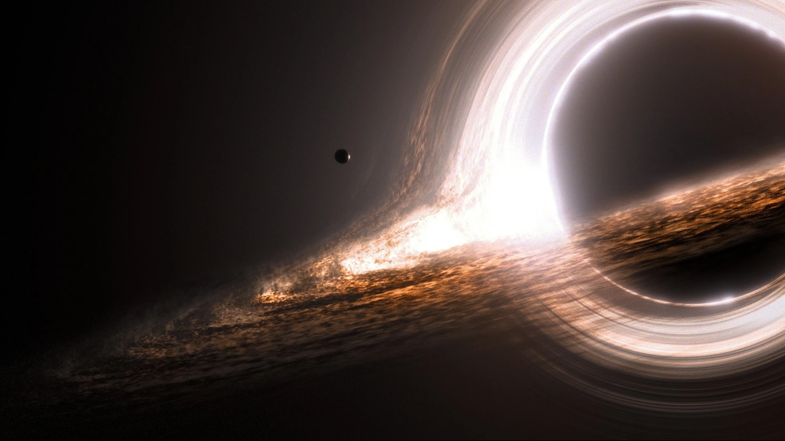El tiempo en Miller (el planeta oceánico): Cada hora allí equivale a 7 años en la Tierra, un efecto real de la gravedad extrema cerca de un agujero negro.
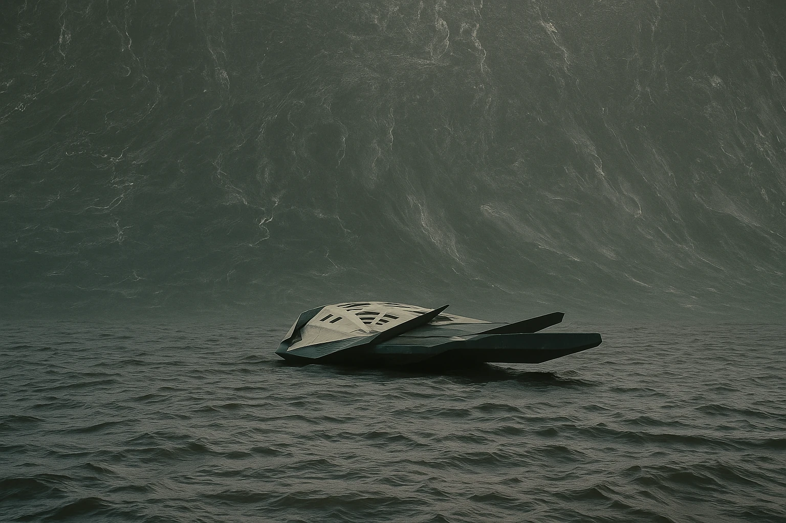EFECTOS PRÁCTICOS
(SIN CGI)
El maíz era real: Nolan hizo plantar 500 acres de maíz en Canadá, que luego se vendieron con ganancias.
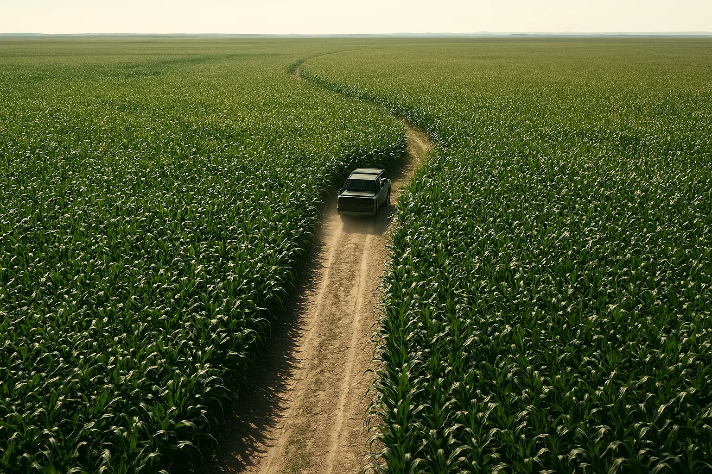 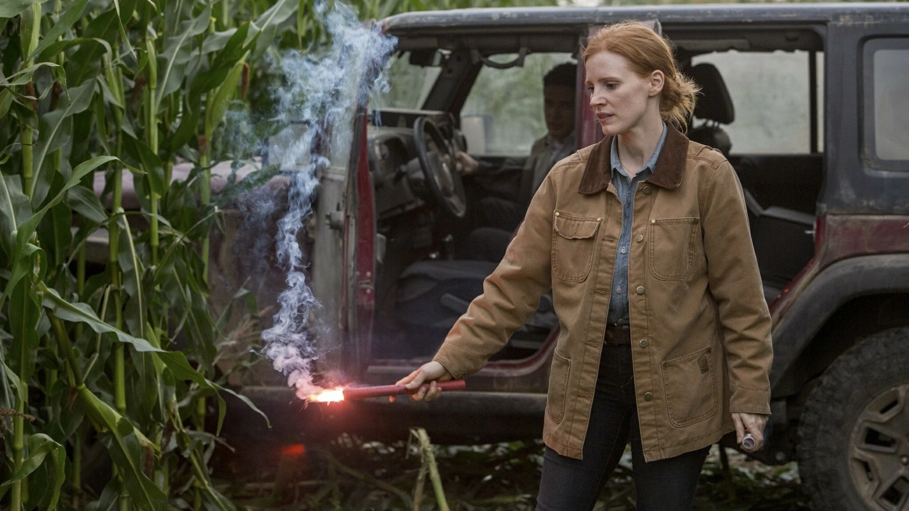La nave espacial usó miniaturas: En lugar de CGI, se construyó una maqueta a escala de la Endurance para las tomas espaciales.
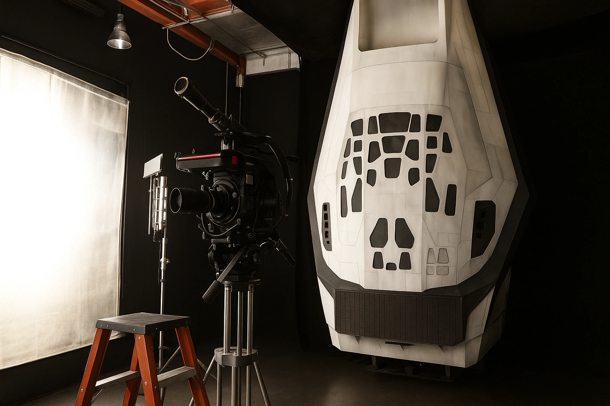Los robots TARS y CASE eran físicos: Operados por actores en el set, con movimientos controlados por joystick.
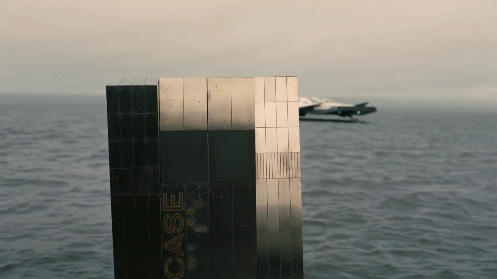 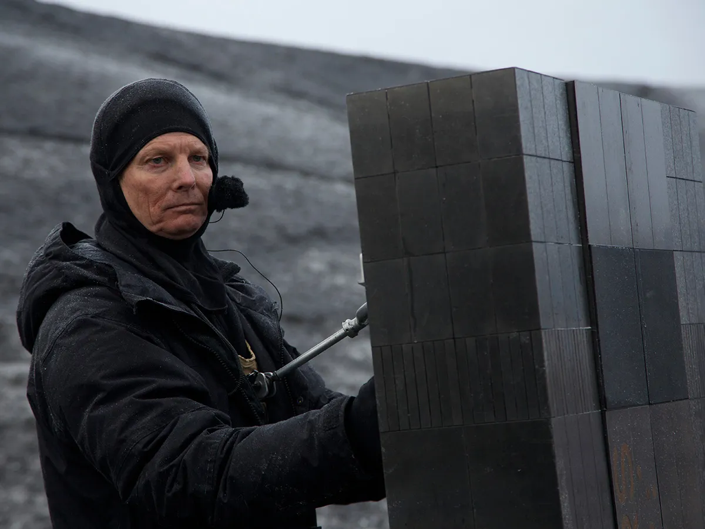 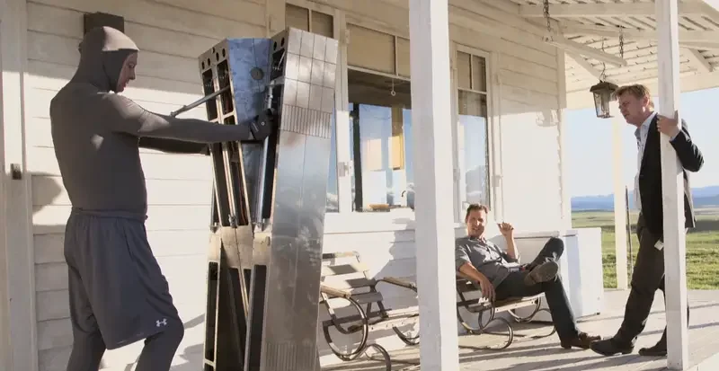La Música y el Sonido
Sin sonido en el espacio: Como en 2001: Odisea del espacio, las escenas en el vacío son silenciosas (salvo la música).
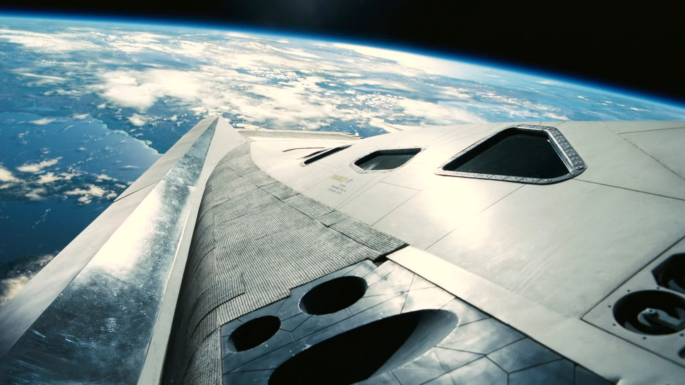 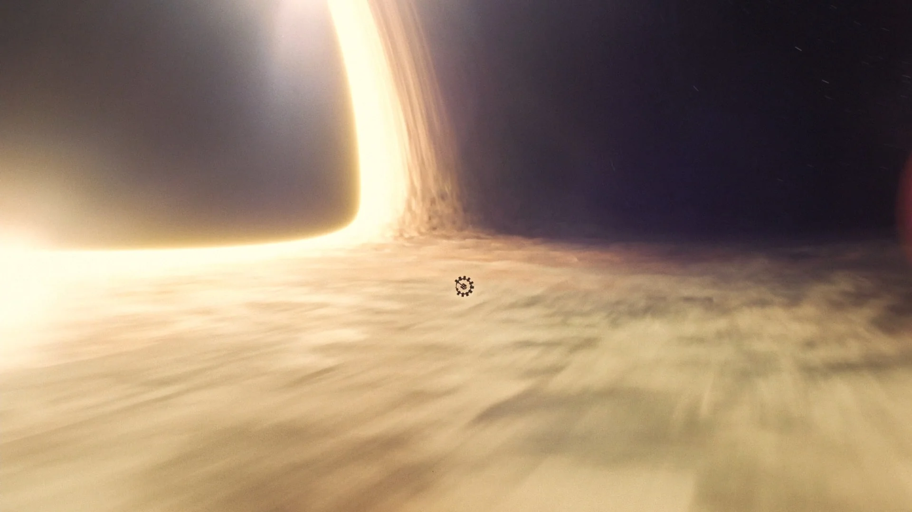EASTER EGGS Y REFERENCIAS
Ecuaciones reales: Las pizarras muestran fórmulas de física cuántica verificadas por Kip Thorne.
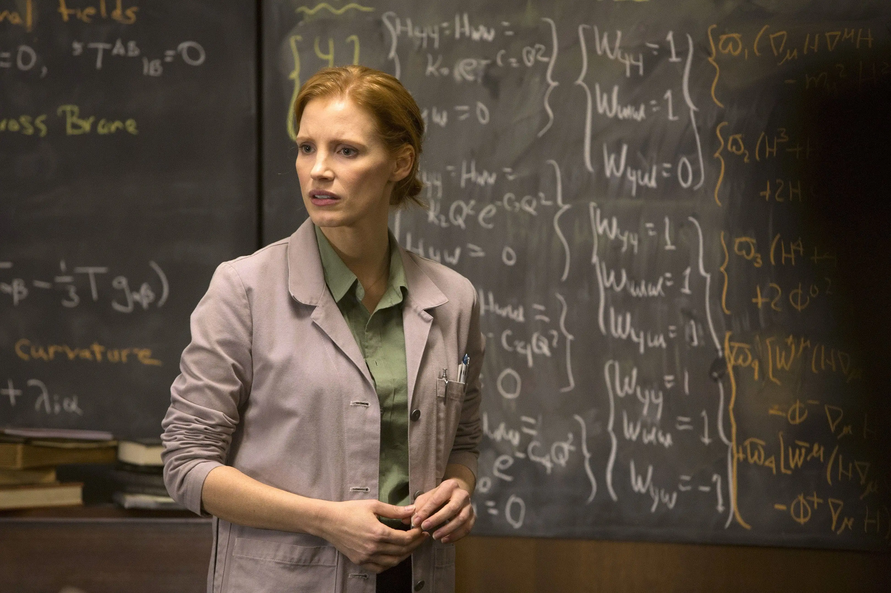 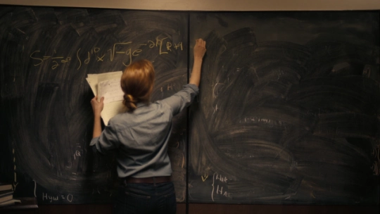 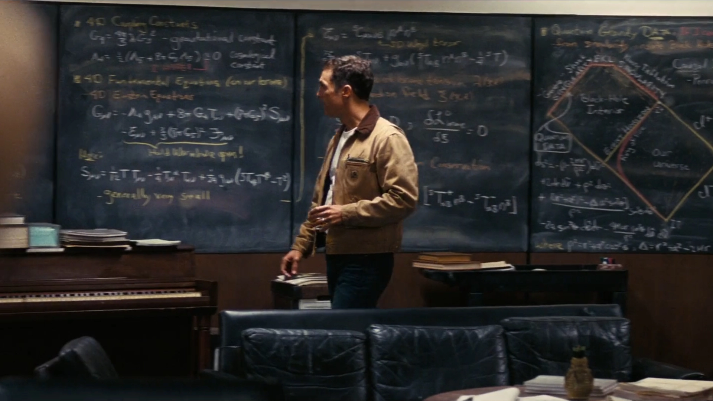* Cooper Station es un homenaje a 2001: La estación giratoria una odisea del espacio.
* El libro que cae en la estantería: Es The Stand de Stephen King, un guiño a historias apocalípticas
* El presupuesto: $165 millones, pero se filmó con cámaras IMAX y 35mm, no solo digital.
* La escena donde Cooper llora al ver los mensajes de Murph fue improvisada por Matthew McConaughey. Nolan usó la primera toma porque fue la más auténtica.
PREMIOS Y NOMINACIONES
~ Interstellar recibió 5 nominaciones al Oscar y ganó 1, además de múltiples reconocimientos en efectos visuales y banda sonora:

Premios Oscar (2015)
🏆 Ganador: Mejores Efectos Visuales (Paul Franklin, Andrew Lockley, Ian Hunter, Scott Fisher).
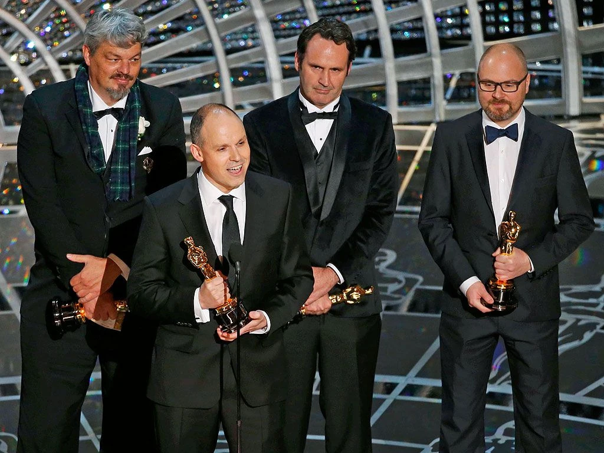
Nominaciones:
~ Mejor Banda Sonora (Hans Zimmer).
~ Mejor Sonido.
~ Mejor Edición de Sonido.
~ Mejor Diseño de Producción.